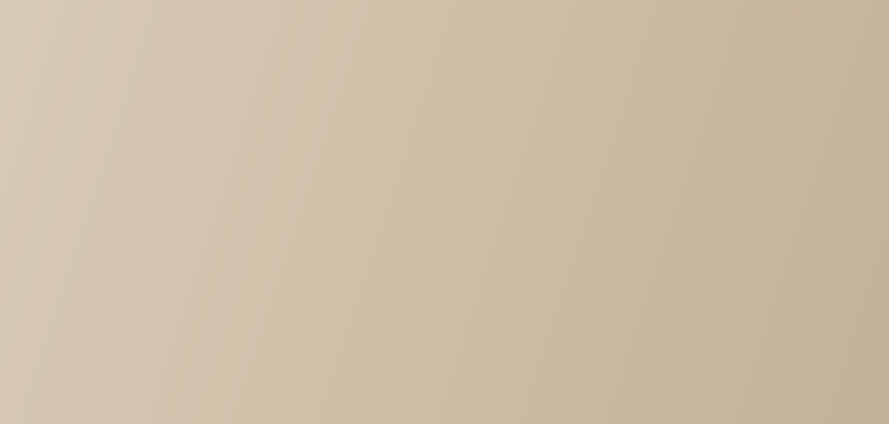

01
Health & Integrity
Every pairing begins with health testing and honest records. We breed for soundness first, and we tell the truth about it.
PINE HILL
German Shepherds
Pine Hill is a family-oriented breeding program for working-line German Shepherds — focused on health, temperament, and the lifelong bond between dogs and their people.

Welcome to Pine Hill
We are a small kennel built around one belief: a German Shepherd should be sound in body, steady in nerve, and easy to live with. Every pairing is planned around health testing and temperament first — and every puppy is raised inside our home, underfoot, as part of the family until it joins yours.

Our story
Pine Hill sits at the calm end of the category — closer to a trusted family practice than a high-volume kennel. We keep a small number of dogs, plan a small number of litters, and give each one the time it deserves.
Our dogs come from proven working lines and live with us as family. That balance — real working ability and a genuine off-switch at home — is what we select for in every generation.
Meet our dogs →What guides us
01
Every pairing begins with health testing and honest records. We breed for soundness first, and we tell the truth about it.
02
Stable, confident dogs suited to family life. Nerve and disposition matter as much as structure.
03
Puppies are raised underfoot with early enrichment and socialization — never warehoused, never rushed.
04
The relationship doesn't end at pickup. We stay reachable for the life of every dog we place.
Our dogs
Health results and pedigrees for every dog are available on request — ask and we'll walk you through them.
Sable male · OFA Good hips
A confident, people-oriented dog with a calm off-switch and sound structure — everything the Pine Hill program breeds toward.
Black & tan female · OFA Good hips & elbows
Steady nerve and a natural handler focus. Patient with children, clear-headed in new places — and she passes that composure on.
Sable female · OFA Normal hips
Athletic and biddable, from proven European working lines. Off the clock, she is a quiet house dog — the balance we breed for.
“Both parents are OFA-tested and raised in our home. We'll help you choose the puppy that fits your family.”
The Pine Hill promise
Puppies
We breed a small number of litters each year, and every placement starts with a conversation about your home, your experience, and what you're hoping for in a dog.
Planned Litter
Greta × Ranger
Expected this fall
Reservations open after a conversation and a completed questionnaire. We'll help you decide whether this litter is the right fit — and which puppy.
Inquire About This LitterHow placement works
01
Send us a note about your household and what you want in a companion or working partner.
02
We talk — by phone or in person. Health records and pedigrees are on the table from the start.
03
We match puppies to homes on temperament testing and eight weeks of daily observation.
04
Puppies go home at eight to ten weeks with a health record, a starter plan, and our number.
Raising
Our puppies are whelped and raised inside our home — around footsteps, kitchen noise, visitors, and daily routine. From the first weeks they get structured early enrichment: new surfaces, gentle handling, novel sounds, and one-on-one time every day.
By the time a Pine Hill puppy goes home, it has met children and calm adult dogs, ridden in a car, and started crate and surface confidence work. Nothing about the process is rushed — that's the point.

Week five — first yard days
Get in touch
Questions about our dogs, upcoming litters, or whether a working-line German Shepherd is right for your home — we're happy to talk it through. And we'll give you a straight answer, even when it's that a different dog would suit your home better.